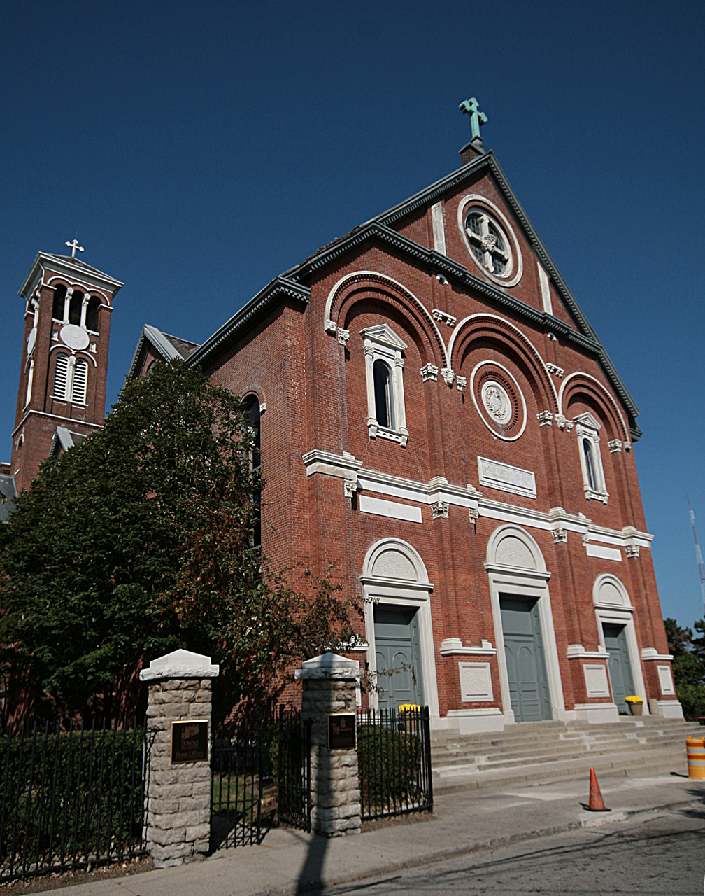

23 February 1918 – 1990
Mary Jane’s Ohio birth record gives her birth as 23 February 1918 in Cincinnati. The index has her mother’s maiden name as “Williams,” an indexing error; other family records identify Helen E. Rich as her mother. The family identifies John Thomas Williams and Helen E. Rich as her parents, but no childhood census or other record has yet placed Mary Jane in their household.
Mary Jane married William Peter Palmer on 6 August 1938 at Holy Cross Church in Mt. Adams, Cincinnati. Their three daughters are Judith Mae, Mary Ann, and Penelope Jane. The 1940 census lists William, Mary Jane, and Judith on River View Place; a second daughter was born in May 1940. The family account places the third daughter’s birth in 1945.
Kathleen Rita, Margaret May, and John Thomas Jr. are listed as siblings based on their own Social Security records, the Williams household records, and family knowledge. No childhood record yet places Mary Jane with them, so the sibling links remain less direct than her birth and marriage records.
The family reports that Mary Jane died in 1990. Her exact date, place of death, and burial have not been found. Do not confuse her with a different Mary Jane Palmer (born 12 January 1918, died 1 September 1990, husband William K. Palmer) buried in Maryland.
23 February 1918 · Birth · age 0
Born in Cincinnati, Hamilton County, Ohio, according to the Ohio birth index.
6 November 1922 · Sister Kathleen Rita born · age 4
Her sister was born on Mt. Adams in Cincinnati.
21 August 1924 · Sister Margaret May born · age 6
Her sister was born in Covington, Kentucky.
10 March 1934 · Brother John Thomas Jr. born · age 16
Her younger brother was born in Cincinnati, Ohio.
6 August 1938 · Marriage to William Peter Palmer · age 20
Married at Holy Cross Church in Mt. Adams, Cincinnati.
9 February 1939 · Daughter Judith Mae born · age 20
Born in Cincinnati, Ohio.
1940 · Cincinnati household · age 22
The census lists Mary Jane with William and Judith on River View Place. A second daughter was born in May 1940.
About 1945 · Third daughter born · about age 26–27
Family research places the birth of her third daughter in the Cincinnati area; an exact date has not been established.
1961 · Father’s death · age 42–43
Her father John Thomas Williams died in Cincinnati, Ohio.
About 1967 · Mother’s reported death · about age 48–49
Family research gives this approximate year for her mother Helen’s death; the exact date and place remain uncertain.
1990 · Death (family-reported year) · about age 71–72
Family research gives 1990 as her death year. Her exact date, place of death, and burial have not been located.
Mary Jane Williams was born in Cincinnati on 23 February 1918, the eldest known child of John Thomas Williams and Helen E. Rich. Her father's grandfather, Robert Williams, born in Ireland, was working as a driver on Butler Street in Cincinnati by 1862, and her father drove a truck in the city through the 1930s and 1940s.
She grew up as the Williams family's oldest daughter. Her sister Kathleen Rita was born in 1922 on Mt. Adams, the steep hilltop neighborhood above the river, and Margaret May, called Margy May, in 1924 across the river in Covington, Kentucky. A baby brother arrived in 1934, when Mary Jane was sixteen. In the late 1930s her parents lived on Pavilion Street on Mt. Adams, near Immaculata, the "Church of the Steps."
On 6 August 1938, at twenty, Mary Jane married William Peter Palmer at Holy Cross Church on Mt. Adams, the 1895 brick church beside the Passionist monastery. Their first daughter, Judith Mae, was born the following February. In 1940 the census taker found Mary J. Palmer, twenty-two, with William and baby Judith on River View Place in Cincinnati. A second daughter was born that May.
During World War II William served in the U.S. Navy as a Seaman 1st Class. Their third daughter was born in 1945.
Mary Jane died in 1990, about seventy-two years old, after more than fifty years of marriage. Her exact date of death and her resting place have not yet been found.
More of Mary Jane's story will be added as family members share their memories.

Place photograph credited to Greg Hume, CC BY 3.0, via Wikimedia Commons. It documents the wedding location, not an image of Mary Jane.
No DNA matches linked yet.
Have a story, photo, correction or record about Mary Jane to share? Leave a note in Mary's profile feedback doc. We check each note and update this profile.
Profile history: Photo Gallery and Family Notes sections added 14 November 2026 to match the current profile layout; existing content preserved; updated 15 November 2026 with a credited wedding-site photograph in the gallery.